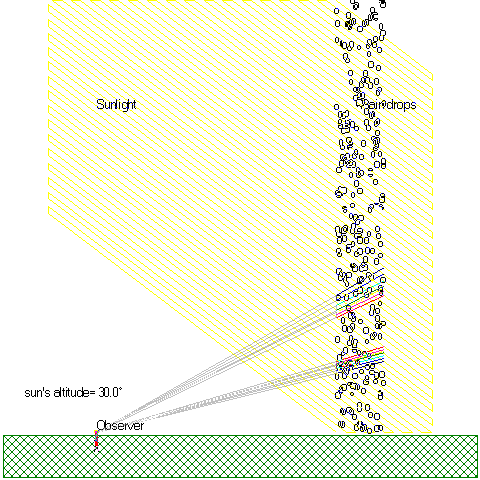
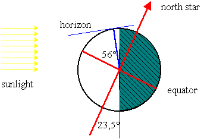

This illustration shows the two rainbows: the primary and the secondary. The illustration shows that if the person on the ground moves, or the sun moves, i.e. the angle of the sunrays relative to the ground changes, the rainbows move as well; but the angle between sunrays and the observed rainbows are unchanged! The angles are shown with blue arcs. (»Marks« has been selected in The Rainbow's menu).
The angle can be measured on a printout, but don't forget to choose angle-preserving printout.
Exercise 1
Notice the order of the colors in the rainbows and measure the angles between sunrays and light from the rainbow for red and violet in both rainbows with an angle meter.
Exercise 2

Use the above picture of the Earth at 12 o'clock (noon) at winter solstice to find the sun's altitude above the horizon.
Draw a corresponding picture of the Earth at 12 o'clock (noon) at summer solstice. At what altitude is the rainbow observed at those times?
What is the altitude of the rainbow when the sun is on the horizon?